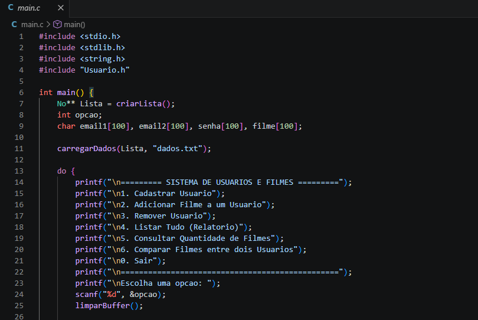
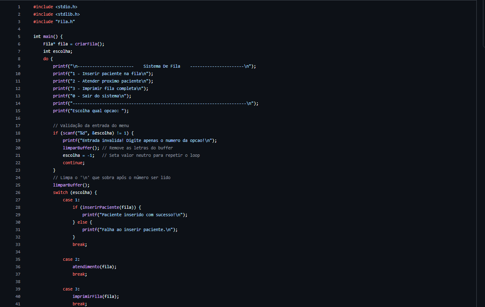

Sergio Raphael
Desenvolvedor
Desenvolvedor
Sou estudante de Ciência da Computação na UFU, com foco em desenvolvimento de software e jogos. Tenho experiência em programação em C, especialmente na implementação de estruturas de dados e resolução de problemas algorítmicos. Atualmente, estou me aprofundando no desenvolvimento de jogos utilizando C# e Unity, buscando aprimorar minhas habilidades em lógica, design de sistemas e criação de experiências interativas. Tenho interesse em desenvolvimento de jogos e sistemas eficientes, e estou sempre em busca de novos desafios para evoluir como desenvolvedor.

Sistema de Gerenciamento de Recomendações de Filmes baseado em Listas Encadeadas

Implementação de uma fila de prioridade dinâmica com lógica de tempo real (time.h) para evitar a espera excessiva de pacientes.